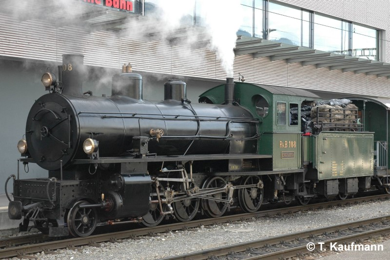
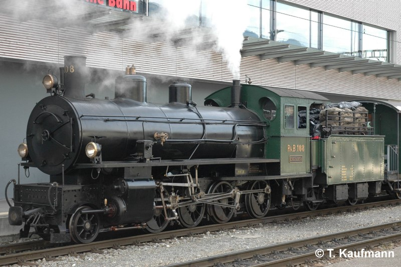

Allgemein
| Baujahr | 1906 |
| Einsatz | StN |
| Antriebstechnik | Heissdampf-Zwillings-Triebwerk |
| Leistung | 800 PS / 590 kW |
| Ergänzungsbremse | Repressionsbremse |
| Stationiert | 107: Landquart 108: Samedan |
Technische Daten
| Geschwindigkeit | 45 km/h (Reihe A) |
| Länge | 13.97 m |
| Gewicht (Tara / Brutto) | 55 t / 67 t |
| Bremsgewicht | 35 t |
| Feststellbremse | H 8 t (10 kN) |
| Kesseldruck | 12 bar |
| Wasservorrat | 9.9 m3 |
| Kohlenvorrat | 2.5 t |
Fahrzeugausrüstung
| Zug-/ Stossvorrichtung | Stangenpuffer 108: Montierbarer Schneepflug |
| Vielfachsteuerung | keine |
| Zugbeeinflussung | keine |
| Heizleitung | keine |
| Speiseluft-Leitung | keine |
| Bremssystem | Vakuum-Hauptleitung |
| LBT-Leitung | keine |